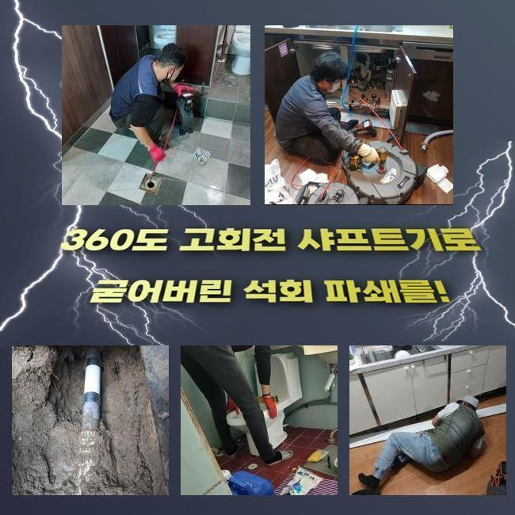
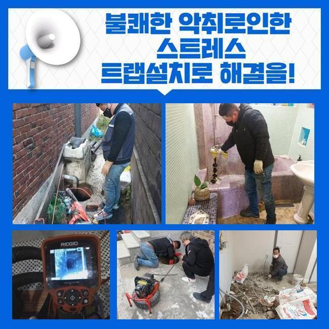
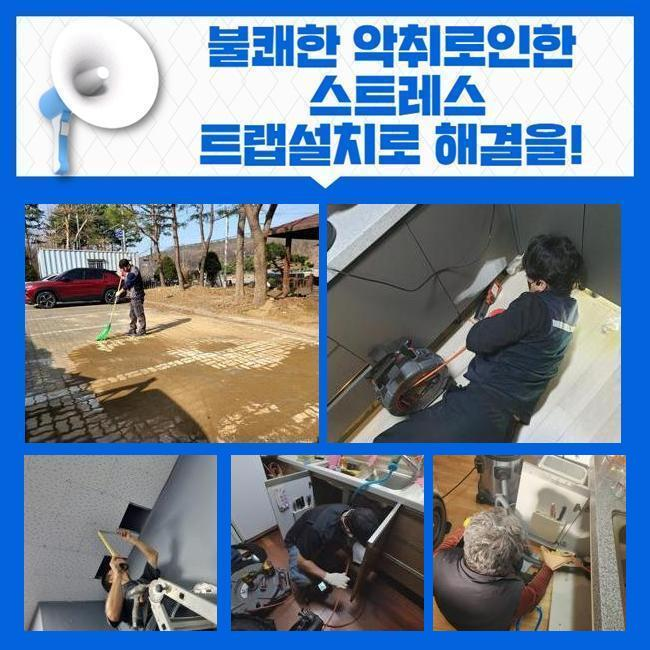
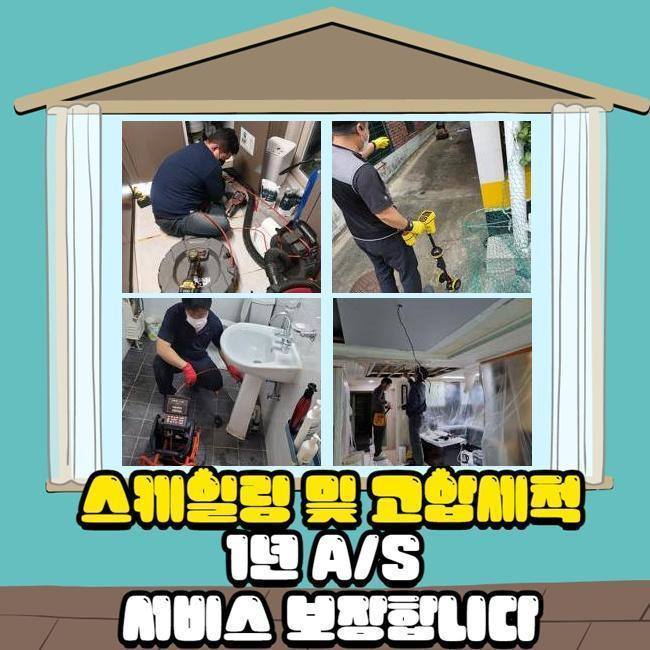
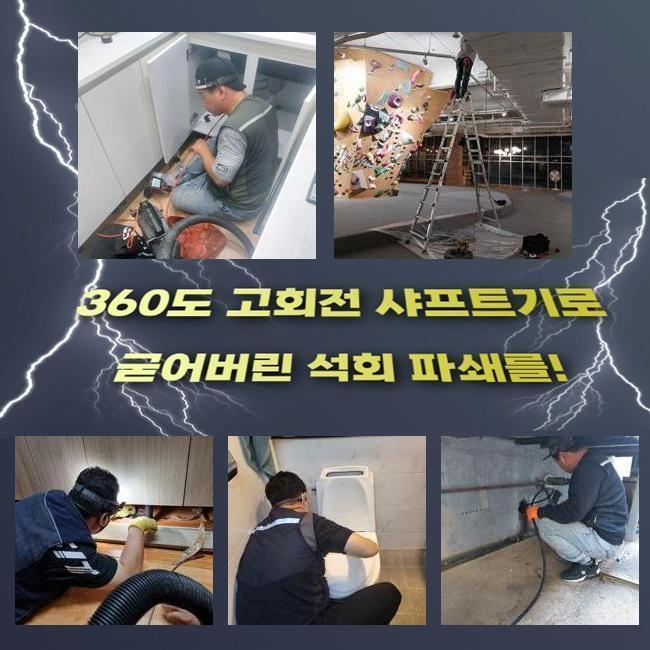
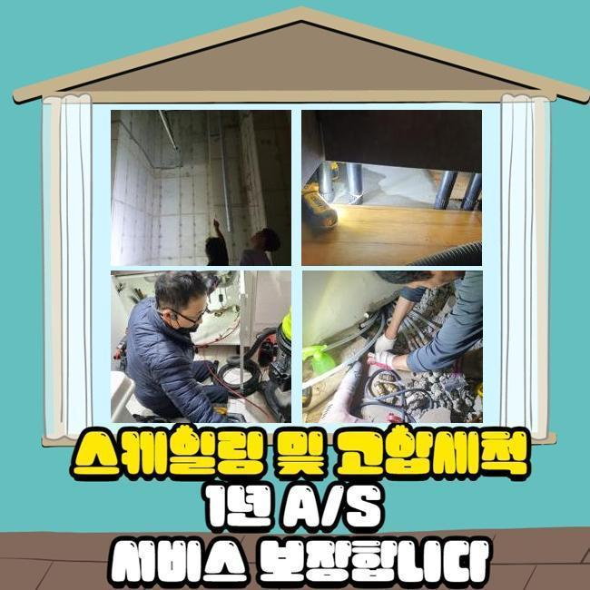
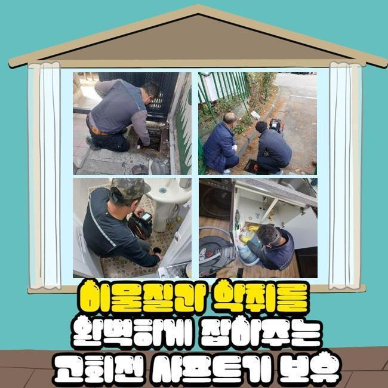

🏠 성남 야탑동대변기역류 삼평동 냄새차단 배관막힘누수
성남 야탑동 변기막힘 전문 시공 후기

📋 작업 개요
- 위치: 성남 야탑동, 야탑동, 성남
- 서비스 유형: 변기막힘, 하수구막힘, 배관막힘, 맨홀막힘, 누수수리, 역류해결, 뚫는업체, 배관청소, 설비공사, 배관보수, 악취차단
- 작업 일시: 2024. 10. 31. 12:50
- 업체명: 하수구수사대 (010-5615-2118)
🔍 문제 상황
성남 야탑동대변기역류 삼평동 냄새차단 배관막힘누수
한 가정집에 계신 분이 하수구에 나타난 이슈를 수습해 줄 수 있겠냐는 문의가 들어왔습니다
이 건물은 세워진 다음 리모델링없이 오래 이용되었던 곳이고 욕실쪽에 하수구 문제가 나타나서 저희 업체에게 시공을 맡겨주신 내역이었죠
저희의 시공 이전에도 앞서 기타 업체들이 이곳을 찾았었지만 안타깝게도 성과를 내지 못했었던 장소라 더욱 신경썼습니다
완성도 높은 시공을 위하여 욕실을 육안으로 꼼꼼하게 체크하고 내시경을 넣어서 속까지 상세하게 봐줬습니다
전반적인 범주를 목표로 삼고 안쪽에 머물러있는 오물들을 짚어서 구체적인 데이터를 인식하게 되었어요
막혀버린 파이프라인과 굵직한 더 큰 배관이 교차하는 섹션에서 문제의 요소를 발견했고 적절한 수단과 방법까지 설계하게 되었어요
오류를 모조리 파악하지 못하면 정화 작업이 미진하게 되고 오물의 일부가 남아있어서 재발생이 되는 상황들이 빈번하게 건물에 생성될 수 있습니다
그러므로 통전체를 스캔하여 전적으로 맑은 환경을 만드는 깔끔한 하수구 정화를 달성해 드리겠습니다
내부 정화를 시작하면서 눈으로 보이던 이물질들이 소강되어가는 것이 보였으나 내면에 딱 달라붙은 채로 더욱 단단하게 정착된 찌꺼기 입자들이 관로 곳곳에 차올라 더럽혀진 모습이었어요
빠른 속도로 도는 샤프트로 거대한 덩어리를 쪼개준 다음 오물을 계속 흡수했고 원래대로 통로를 확보했어요

🔎 원인 분석
💡 전문가 진단: 정밀 진단 장비를 사용하여 슬러지의 고착 여부를 판명하고 타격/세척 작업을 실시했습니다.
뚫음을 시도했었던 쪽이 보이기는 했지만 미처 수습되지 못한 잔여물로 인해 하수가 막혀버린 겁니다
소량만 세정을 하게 되면 물의 이동이 다시 될 수 있어도 즉시 재차 막힐 게 분명합니다
안을 제대로 치워주고 관로 속의 상황에 대해서 안내하면서 이해시켜드렸어요
미처 제거되지 못한 잔여물이 미약한 양이라고 해도 덕지덕지 합체가 되면 엄청난 덩치가 되어서 경로를 차단하게 되겠죠
플렉스샤프트를 돌려 대형 오물을 컷팅해서 날리는 조각은 습식청소기 석션으로 처리하여 말끔하게 없애줬습니다
조심성없이 배관으로 이물질을 폐기한다면 새로운 막힘 사태가 형성될 위험이 있기 때문이죠
이전의 시공자는 일부 구간만 신경을 쓴건지 시작 단계에서 가볍게만 전작업만 들어갔음에도 불구하고 막혔던 게 순조롭게 열리는 형상이 보이더라고요
또한 하수관의 심층부에서부터 악취가 올라왔으므로 이것도 해소가 필요하다 싶었네요
역류와 냄새를 막는 트랩을 달아서 밑에서 올라오는 모든 것을 차단했고 주기적으로 교체하는 점이 필요하다는 것도 다시 한 번 인지시켜드렸습니다
나중에는 이러한 힘든 상황을 맞닥뜨리지 않을 수 있다는 확신만 얻어도 앞으로는 열심히 따라 주실 것입니다
실내 하수관을 모두 청소하고 작업이 생각보다 빠르게 이뤄진 것 같아서 추가로 바깥까지 보는 게 맞겠다 싶어서 실내를 벗어나 야외에 있던 맨홀 뚜껑을 오픈해 보았어요

🔧 작업 과정
여기에도 내시경을 써서 내부 상황을 탐색해 보았고 야외 배관에도 다량의 이물질이 끼어있다는 점을 모니터링으로 알게 됐습니다
그대로 놔두면 큰일나므로 깨끗하게 관리해 드리려고 외부 하수시스템의 정화까지도 추가로 착수하기로 협의했습니다
내시경 장비를 선진입 시키는 것은 막힘이 도래한 장소들과 상황을 명확하게 지능적으로 판단하게 지원하는 중책을 담당하는 기구입니다
특히 옥외의 커다란 하수시설은 단순한 시각적 판별만으로는 제한이 분명하기 때문에 선명한 뷰를 제공하는 내시경이 협력해서 처리해야 합니다
깊은 안쪽까지 확인하고자 카메라를 또다시 활용했고 그 결과 더러운 슬러지가 새롭게 조명되었습니다
석션의 작동을 통하여 모조리 정화가 되었는데 배출량도 기대보단 적었어요
갑작스럽게 물길이 뚫리면서 물이 실내로 솟구쳐올라서 다시 욕실 부근으로 향하게 되었어요
여기도 석션을 써서 문제를 잘 풀어주었고 그 다음 옥외 배관을 끝으로 한 차례 더 점검을 거쳐야 하겠다는 마음이 들었습니다
시공이 끝난 이후에라도 도래할 가능성이 있는 사태를 미연에 방지하려고 전 배관을 두루 살펴보았는데 노후된 배관 자재라서 혹시나 갈라짐과 같은 파손이 나타나지는 않았나 체크했어요
한순간에 여러 사태가 터진 사태라해도 집중력을 발휘하여 청소를 이끌어 나가서 결점 없이 공사를 달성할 수 있었습니다
돌처럼 석회화된 불순물이 집요하게 달라붙었다면 특수 도구를 동원해서 석회 잔여물을 강하게 파쇄하고 습식 청소 장치로 정돈하여 투명한 파이프라인을 구축했습니다!
사이사이 내시경을 지속적으로 확인해 주면서 미미한 조각들이나 침전물도 끊임없이 삭제를 시키니 엉성한 청소와는 획기적으로 확실한 결과물을 거둘 수 있습니다
내부를 싹 치워드림으로써 하수관이 다시금 시원하게 활동 여건이 조성되었고 말끔한 내부 환경을 확고히 지켜낼 수 있었어요
하수가 막힘없이 움직이나 수도시설을 활성화시켜본 이후 건물 안에 장착된 배관망을 포괄적으로 살펴보면서 보수된 결과물을 확인해봐요
과정 이후에 하수배관이 겉으로도 매끄럽고 작동 상태가 양호하면 기기를 거둬들이고 청소해줘요!
끝 단계로써 깨끗하게 치워드린 하수구의 오랜 유지를 이어가실 수 있게끔 추후의 점검을 받으실 수 있는 실행 방식을 공유해 드렸어요
이는 추후 다시 나타날지 모르는 징후를 앞서 알아차려서 즉각 응급 처리가 가능하게 해주려는 의도입니다
이와 같은 이슈가 터지면 전문케어를 신청하여 신속하게 반응하는 것이 필요합니다


✅ 작업 완료
셀프 조치만 해오셨다면 굉장히 조만간 막힘이 다시 발생할 수 있으니 확실한 방법으로 수리를 받으셔야 해요
편하신 조건에 맞춰드리기에 늦은 시간이나 이른 아침이나 작업지를 찾아서 솔루션을 제공해 드리니 걱정마세요
물이 아예 빠져나가지 못하는 상태라면 전문가의 도움을 받는 것이 필수적이며 고객님이 요청하신다면 개인화된 서비스를 해드립니다
자기 집 뿐만 아니라 전세대가 해당되는 사건을 유도하는 단초가 될 수 있으니 한시라도 빠르게 능동적 행동을 시도하시라고 응원드리고 싶습니다!
불러주신데에 대한 감사함을 안고 출동한다고 약속드릴게요!




⚠️ 베란다 누수 및 방수 관리 방법
- ✅ 비가 많이 올 때 창틀 주변이나 아래층 천장에 얼룩이 생기는지 정기적으로 확인해 보세요.
- ✅ 우수관 주변 실리콘 마감이 들뜨거나 깨진 틈새가 있는지 손상 여부를 수시로 체크하세요.
- ✅ 베란다 바닥 타일의 줄눈(메지)이 소실되면 그 틈으로 물이 침투하여 누수가 유발됩니다.
- ✅ 누수 의심 증상 발견 시 방치하면 아래층 손실이 커지므로 즉시 전문가의 진단을 받으십시오.
💡 핵심 정리
- 확실한 장비 작업(내시경 점검 및 샤프트 스케일링)으로 원인을 뿌리 뽑습니다.
- 작업 후 1년 이내에 동일한 부위 재발 시 100% 무상 A/S 서비스를 보장합니다.
- 서울 · 경기 · 인천 전 지역에 24시간 언제든 긴급 출동할 수 있도록 항시 대기 중입니다.
❓ 자주 묻는 질문 (FAQ)
🚨 성남 야탑동 변기막힘 문제로 고민이신가요?
정확한 원인 진단과 확실한 시공으로 재발 없는 해결을 약속드립니다.
24시간 긴급 출동 | 서울 · 경기 · 인천 전지역 | 1년 내 재발 시 무상 A/S